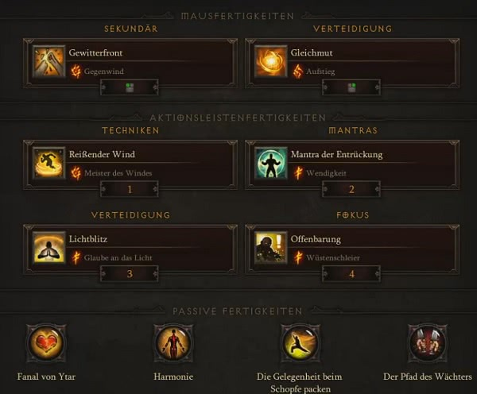

Mönch
Gerechtigkeits Build
Für den Mönch und seinen Besten Build haben wir noch ein kleines Update für Season 22. Gespielt wird mit dem Set: Muster der Gerechtigkeit in Patch 2.6.10 und mit der Gewitterfront. Zusätzlich nützen wir noch das gebuffte Waffen-Set: Shenlongs stählerner Schlag & Shenlongs legendäre Faust.
Video Guide
Skillung
{kind=link}
Items
| Itemslot | Item | Stats |
|---|---|---|
| Waffe | Won Khim Lau | CDR > 10% DPS > Sockel |
| Offhand | Rachsüchtiger Wind | CDR > 10% DPS > Sockel |
| Kopf | Muster der Gerechtigkeit | Geschick > Vita > ChC > Sockel |
| Brustrüstung | Muster der Gerechtigkeit | Geschick > Vita > x3 Sockel > ALL Resi |
| Schultern | Muster der Gerechtigkeit | Geschick > Vita > CDR > ALL Resi |
| Beine | Muster der Gerechtigkeit | Geschick > Vita > x2 Sockel > ALL Resi |
| Hüfte | Kapitän Karmesins Seidenschärpe | Geschick > Vita > Rüstung > ALL Resi |
| Füße | Kapitän Karmesins Watstiefel | Geschick > Vita > ALL Resi |
| Handgelenke | Cesars Andenken | Geschick > Vita > ChC > 20% Kälte-Schaden |
| Hände | Muster der Gerechtigkeit | Geschick > ChC > ChD > CDR |
| Amulette | Duft der Zeit | ChC > ChD > Geschicklichkeit |
| Ringe |
|
Sockel > ChC > ChD |
Verwendete Abkürzungen
ChC = Kritische Trefferwertung, ChD = Kritischer Trefferschaden, CDR = Abklingzeitreduktion, IAS = Angriffsgeschwindigkeit, RcR = Ressourcenkostenreduktion, LoH = Leben pro Treffer, AD = Flächenschaden